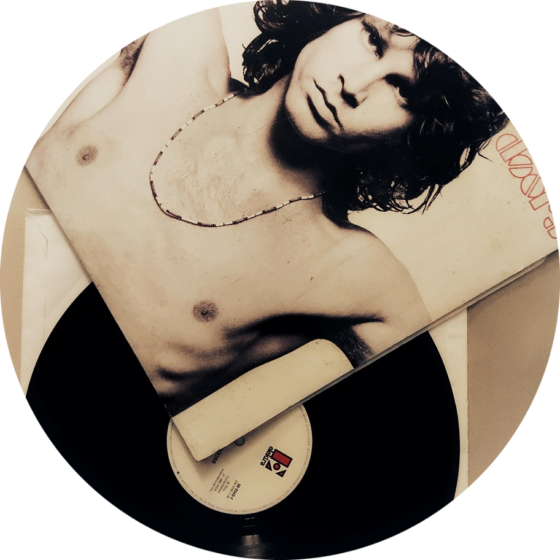
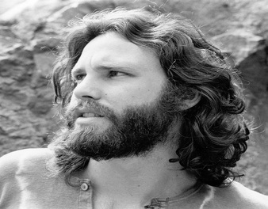
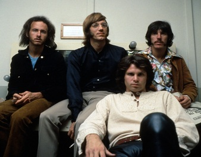
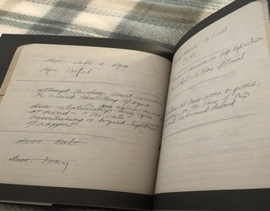

Mais do que o vocalista do The Doors,
Jim Morrison,
foi um poeta que transformou palavras
em portais
para o inconsciente.
Vida – Um espírito livre.
Músicas – Libertação.
Poemas – A voz do inconsciente.
Nascido em 8 de dezembro de 1943, na Flórida, Jim Morrison cresceu entre livros, sonhos e
inquietações.
Ainda jovem, mergulhou na poesia e na filosofia, buscando nas palavras o mesmo mistério que via na
vida.
Em 1965, deu voz à sua alma ao formar o The Doors, banda que se tornaria o portal entre a
música
e o inconsciente coletivo.
Com sua presença magnética e versos incendiários, Morrison desafiou a razão e celebrou o
desconhecido.
Partiu cedo, em 3 de julho de 1971, em Paris — deixando ecos de liberdade, poesia
e
eternidade.
Em 1965, Jim, fundou o The Doors, ao lado de Ray Manzarek, Robby Krieger e John Densmore.
Com seu
estilo provocante e letras poéticas, tornou-se a alma da banda e um ícone do rock dos anos 60.
Suas performances intensas e músicas marcantes mudaram para sempre a história da música.

Do garoto introspectivo ao ícone do rock e da poesia. Conheça a trajetória intensa e marcada por genialidade.
Ler história
A banda que mudou a música para sempre. Psicodelia, improviso e atitude que marcaram uma geração.
Ler história
Versos profundos que revelam seu lado filosófico, sensível e enigmático.
Ler poesias